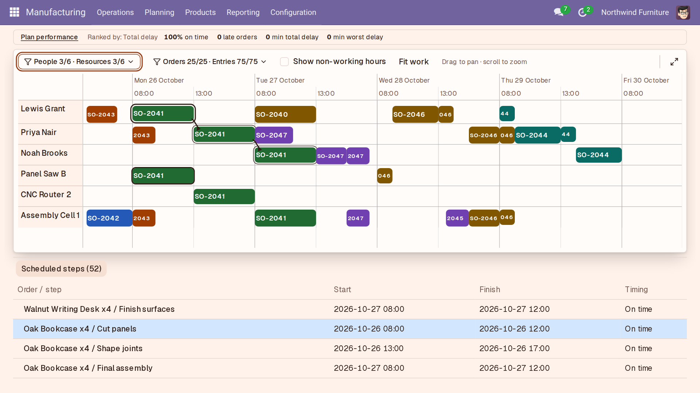
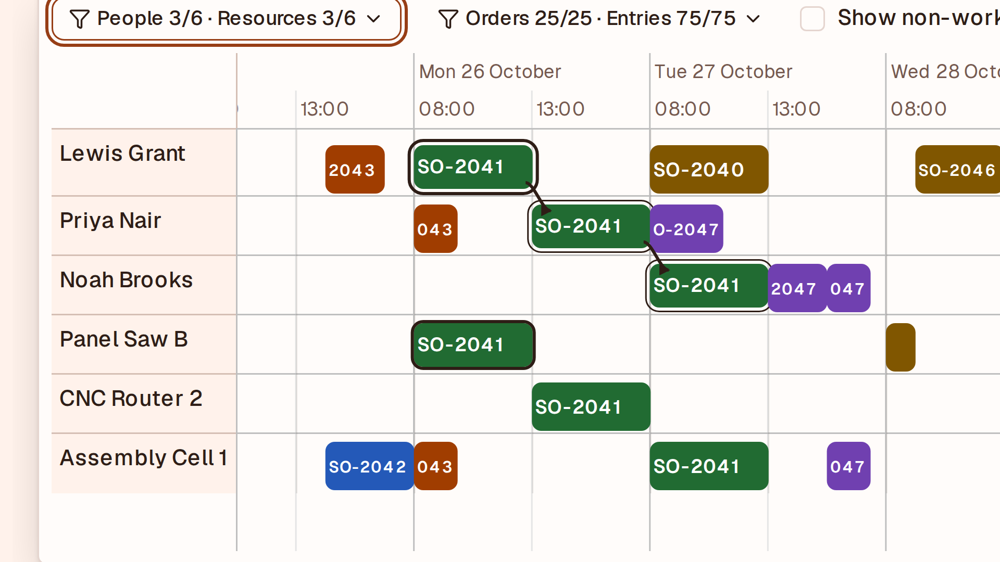
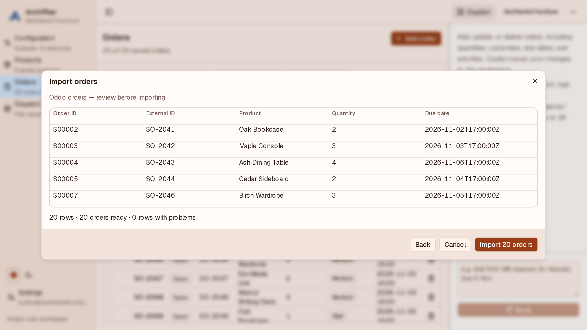
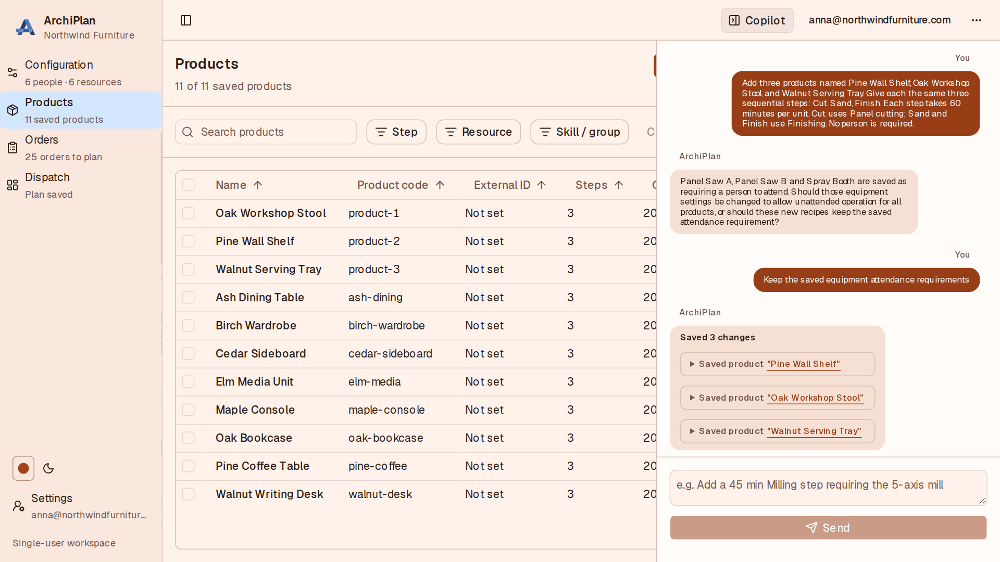

Production scheduling you set up by talking – now inside Odoo
ArchiPlan is production scheduling for small and mid-sized manufacturers. Describe your shop by voice or text, and it plans every order around your people, machines, shifts and deadlines. When a rush job lands or someone is off, rebuild the plan in one click.
Selected Odoo sales orders go into ArchiPlan, and the live plan appears in Odoo under Manufacturing → Planning.

See the whole plan inside Odoo
Review production work across people and machines in the Manufacturing schedule.

Follow an order step by step
Trace linked steps and check their start, finish and on-time status.

Zoom in to the hour
Read order labels and follow work across resource rows at an hourly scale.

Choose which orders to bring in
Filter Odoo sales orders by status and creation date.

Check the order details first
Review products, quantities and customer references before anything is saved.

Keep Odoo access read-only
Review the access settings while the API key remains masked.

Set up by talking
Describe what you make in a sentence and Copilot can add the products for you to review.

Give each machine its rules and hours
Set machine skills, operation rules and working hours.

Define products as step-by-step recipes
Set the machine and skill needed for each production step.